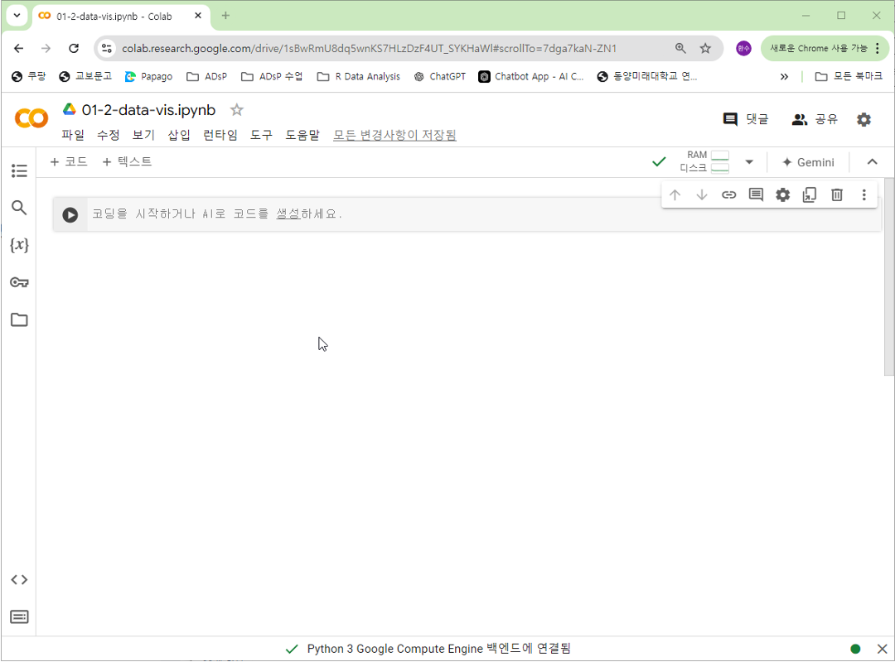
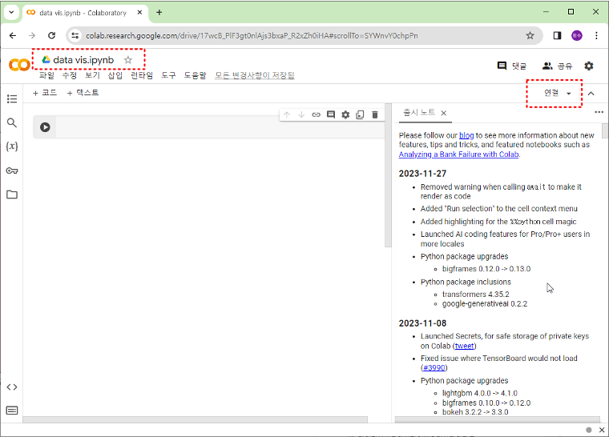
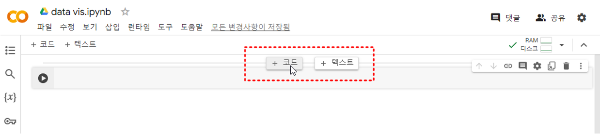
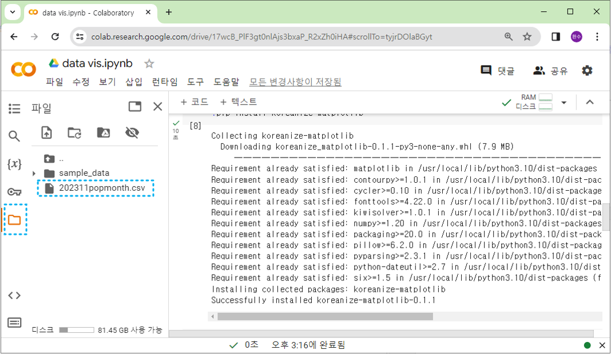

1주차 환경설정: Google Colab 가이드
학습목표: 클라우드 기반 분석 환경인 Google Colab의 특징을 이해하고, 기본적인 사용법과 데이터 연동 방법을 익힙니다.
1.2.1. Google Colab 완전 정복
Google Colab (Colaboratory): 구글이 제공하는 클라우드 기반의 주피터 노트북(Jupyter Notebook) 개발 환경입니다. 별도의 설치 없이 브라우저에서 바로 파이썬 코드를 작성하고 실행할 수 있습니다.
1.2.1.1. 주요 특징 및 장점 (Key Features)
왜 전 세계 데이터 분석가들이 Colab을 사랑할까요?
- 접근성 (Accessibility): 인터넷만 되면 어디서든(카페, 학교, 집) 코딩이 가능합니다. 태블릿이나 스마트폰에서도 코드를 확인할 수 있습니다.
- 무료 컴퓨팅 자원 (Free GPU/TPU):
- 딥러닝 학습에는 고성능 그래픽 카드(GPU)가 필수적인데, Colab은 이를 무료로 제공합니다.
- 마치 “고사양 게이밍 PC”를 원격으로 빌려 쓰는 것과 같습니다.
- 협업 용이성 (Collaboration):
- 구글 문서를 공유하듯이 동료와 코드를 실시간으로 공유하고 댓글을 남길 수 있습니다.
- “짝 프로그래밍”에 최적화된 도구입니다.
- 라이브러리 사전 설치:
- Pandas, Numpy, Matplotlib, Scikit-learn, TensorFlow 등 데이터 분석에 필요한 대부분의 도구가 이미 설치되어 있습니다.
import만 하면 바로 쓸 수 있죠!
- Pandas, Numpy, Matplotlib, Scikit-learn, TensorFlow 등 데이터 분석에 필요한 대부분의 도구가 이미 설치되어 있습니다.
1.2.1.2. Colab 시작하기 (Getting Started)
- 접속: Google Colab 사이트에 접속합니다. (구글 계정 로그인 필요)
- 새 노트 생성:
- 우측 하단의
새 노트(New Notebook)버튼을 클릭합니다. - 또는 파일 메뉴에서
파일 > 새 노트를 선택합니다.

- 우측 하단의
- 파일 이름 변경:
- 좌측 상단의
Untitled0.ipynb를 클릭하여Week01_Practice.ipynb로 변경합니다.

- 좌측 상단의
- 런타임 연결:
- 우측 상단의
연결버튼을 클릭하여 할당된 자원(RAM, 디스크)을 연결합니다.

- 우측 상단의
1.2.1.3. 코드 작성 및 실행 (Basic Usage)
Colab은 셀(Cell) 단위로 작동합니다. 레고 블록처럼 셀을 쌓아서 프로그램을 만듭니다.

- 코드 셀 (Code Cell):
- 파이썬 코드를 작성하는 공간입니다.
- 실행:
Shift + Enter(실행 후 다음 셀로 이동) 또는Ctrl + Enter(실행 후 제자리). - 예시:
print("Hello, Colab!")
- 텍스트 셀 (Text Cell):
- 설명, 메모, 이미지를 넣는 공간입니다.
- 마크다운(Markdown) 문법을 지원하여 예쁘게 문서를 꾸밀 수 있습니다. (제목, 리스트, 볼드체 등)
1.2.1.4. 파일 업로드 및 데이터 처리
로컬 컴퓨터에 있는 엑셀 파일이나 이미지(csv, xlsx, jpg 등)를 Colab으로 올려서 분석할 수 있습니다.
- 좌측 사이드바의 폴더 아이콘(파일)을 클릭합니다.
-
업로드 아이콘(종이에 위로 화살표)을 클릭하여 파일을 선택하거나, 파일을 드래그 앤 드롭합니다.

- 코드로 불러오기:
import pandas as pd # 'data.csv' 파일을 업로드했다고 가정 # df = pd.read_csv('data.csv') # print(df.head())주의: 이렇게 업로드한 파일은 런타임이 종료(브라우저 종료 후 일정 시간 경과)되면 삭제됩니다. 중요한 데이터는 구글 드라이브에 저장해야 합니다.
1.2.1.5. 구글 드라이브 연동 (Google Drive Mount)
데이터를 안전하게 보관하고, 지속적으로 사용하려면 구글 드라이브를 현재 노트북에 “연결(Mount)”해야 합니다.
- 방법 1: 아이콘 클릭
- 좌측 파일 탭에서 드라이브 마운트 아이콘(폴더에 구글 드라이브 로고)을 클릭합니다.
- 팝업 창에서 권한을 허용합니다.
- 방법 2: 코드 실행
from google.colab import drive drive.mount('/content/drive')- 실행하면
/content/drive/MyDrive/경로에 내 구글 드라이브의 모든 파일이 나타납니다. - 이제 드라이브에 있는 파일을 불러오거나, 분석 결과를 드라이브에 영구 저장할 수 있습니다.
- 실행하면
1.2.1.6. 노트북 저장 및 내보내기 (Saving & Exporting)
열심히 짠 코드를 잃어버리면 안 되겠죠?
- 자동 저장: 구글 문서처럼 Colab은 작업 내용을 주기적으로 구글 드라이브에 자동 저장합니다. (
파일 > 저장으로 수동 저장도 가능) - GitHub 사본 저장:
파일 > GitHub에 사본 저장을 선택하면 내 GitHub 리포지토리에 바로 커밋할 수 있습니다. 포트폴리오 관리에 유용합니다.
- 다운로드:
파일 > 다운로드 > .ipynb 다운로드: 주피터 노트북 파일로 저장 (VS Code 등에서 실행 가능).파일 > 다운로드 > .py 다운로드: 순수 파이썬 스크립트로 저장.